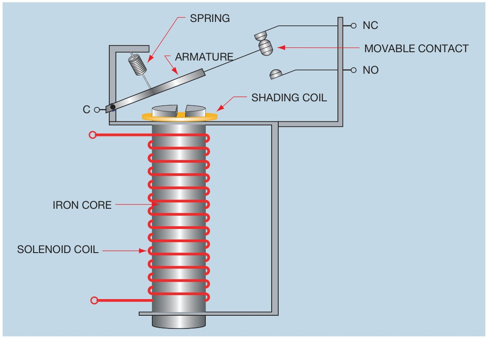
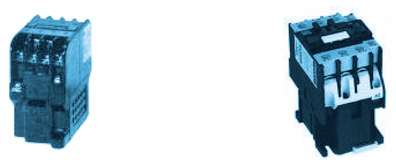
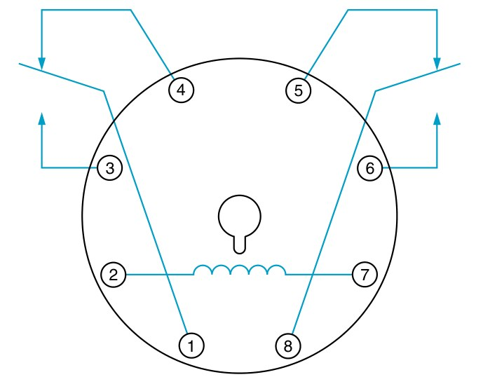
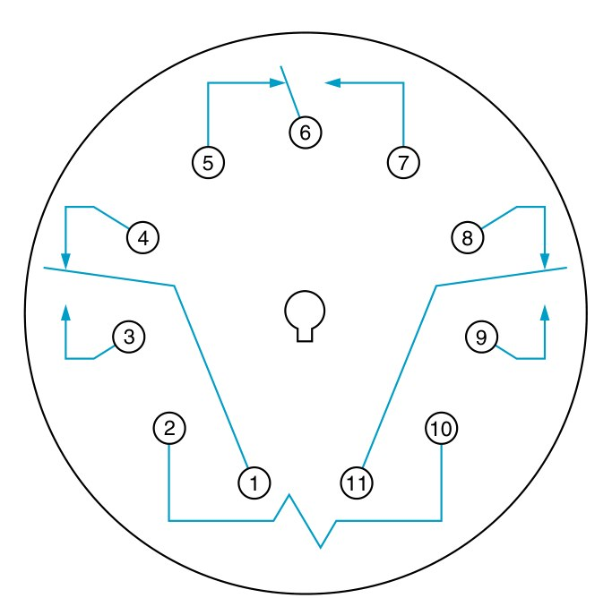

รีเลย์ช่วย (auxiliary relay หรือ control relay) ทำงานแบบเดียวกับคอนแทกเตอร์ คือป้อนไฟคอยล์แล้วหน้าสัมผัสเปลี่ยน แต่ตัวเล็กกว่าและมีแต่หน้าสัมผัสขนาดเล็กสำหรับวงจรควบคุม ใช้เมื่อหน้าสัมผัสของอุปกรณ์ที่มีอยู่ไม่พอ เมื่อสัญญาณมีกำลังน้อยเกินกว่าจะสั่งคอยล์คอนแทกเตอร์โดยตรง หรือเมื่อต้องการให้สัญญาณหนึ่งสั่งหลายอย่างพร้อมกัน หน้านี้ให้ลองรีเลย์ตัวเดียวสั่งคอนแทกเตอร์สองตัวกับหลอด และอ่านเลขขั้วกับขาของรีเลย์แบบเสียบ
An auxiliary (control) relay works like a contactor: energise the coil and the contacts change. But it is smaller and has only small contacts for control circuits. It is used when a device has too few contacts, when a signal is too weak to drive a contactor coil directly, or when one command must do several things at once. This page lets one relay drive two contactors and a lamp, and reads the terminal numbers and pins of plug-in relays.
รูป 5.1 ของ UMC5 แสดงหลักของรีเลย์: คอยล์พันรอบแกนเหล็ก เมื่อมีไฟ แกนเหล็กดูดแกนเหล็กเคลื่อนที่ (armature) ที่ยึดหน้าสัมผัสเคลื่อนที่ไว้ หน้าสัมผัสจึงย้ายจากด้านปกติปิดไปด้านปกติเปิด ตัดไฟแล้วสปริงดึงกลับ เป็นหลักเดียวกับคอนแทกเตอร์ในหน้า 4.1 แต่หน้าสัมผัสเล็กกว่ามาก
รูป 3.4 ของตำราไทยคือรีเลย์ช่วยแบบคอนแทกเตอร์ซึ่งพบมากในชุดฝึก หน้าตาเหมือนคอนแทกเตอร์แต่มีแต่หน้าสัมผัสช่วย การ์ดด้านล่างเป็นรีเลย์แบบเสียบบนฐานที่ติดบนรางยึดอุปกรณ์มาตรฐานกว้าง 35 mm (ราง DIN) ซึ่งถอดเปลี่ยนตัวรีเลย์ได้โดยไม่ต้องถอดสาย
UMC5 Fig. 5.1 shows the principle of a relay: the coil sits on an iron core; when energised, the core pulls the armature that carries the moving contact, so the contact moves from the NC side to the NO side, and a spring pulls it back when the coil is switched off. It is the contactor of page 4.1 again, with much smaller contacts.
Thai textbook Fig. 3.4 shows contactor-type auxiliary relays, common on training boards: they look like contactors but carry only auxiliary contacts. The card below is a plug-in relay on a socket for the standard 35 mm DIN rail; the relay can be changed without touching the wiring.


กดปุ่มเริ่ม S2 แล้วปล่อย: คอยล์ KA1 มีไฟ หน้าสัมผัส 13–14 ของ KA1 ค้างวงจรไว้ หน้าสัมผัสอีกสามตัว 23–24, 33–34 และ 43–44 สั่งคอนแทกเตอร์ KM1, KM2 และหลอด H1 พร้อมกัน กดปุ่มหยุด S1 ทุกอย่างหยุด สังเกตตารางอ้างอิงใต้คอยล์ KA1 ซึ่งมีหน้าสัมผัสครบ 4 ตัว ทุกการกดจะบันทึกลงตาราง
Press start S2 and let go: coil KA1 is energised, KA1's contact 13–14 holds the circuit, and its other three contacts 23–24, 33–34 and 43–44 drive contactors KM1, KM2 and lamp H1 together. Press stop S1 and everything stops. Note the cross-reference under coil KA1, listing all four contacts. Every press is recorded below.
รูป 7-7 และ 7-8 ของ EMC9 คือแผนผังขาของรีเลย์ฐานกลม 8 ขาและ 11 ขา มองจากด้านล่างโดยให้บ่าล็อกอยู่ด้านล่าง ขาคอยล์คือ 2–7 และ 2–10 หน้าสัมผัสเปลี่ยนทางแต่ละชุดมีขาร่วมหนึ่งขา ขาปกติปิดหนึ่งขา และขาปกติเปิดหนึ่งขา เวลาเขียนแบบให้เขียนเลขขาจริงของรีเลย์ไว้ที่ปลายหน้าสัมผัส และอ่านจากแผ่นข้อมูลของรุ่นที่ใช้ทุกครั้ง เพราะผู้ผลิตบางรายจัดขาต่างกัน
EMC9 Figs 7-7 and 7-8 are the pin diagrams of 8- and 11-pin round-base relays, seen from below with the key at the bottom. The coil pins are 2–7 and 2–10; each changeover contact has a common pin, an NC pin and an NO pin. On a drawing, write the relay's real pin numbers at the contact ends, and always check them on the data sheet of the model used, because some makers arrange the pins differently.


เซนเซอร์ตรวจชิ้นงานให้หน้าสัมผัสเล็กมาก (ทนกระแสได้น้อย) แต่ต้องสั่งงาน 3 อย่าง: คอนแทกเตอร์สายพาน KM1 หลอดเขียว H1 และต้องตัดหลอดแดง H2 ขณะมีชิ้นงาน (ก) ทำไมจึงไม่ต่อหน้าสัมผัสของเซนเซอร์เข้าคอยล์ KM1 โดยตรง (ข) ใช้รีเลย์ KA1 แบบคอนแทกเตอร์ 4 หน้าสัมผัส ต้องใช้หน้าสัมผัสปกติเปิดกี่ตัวและปกติปิดกี่ตัว (ค) เขียนเลขขั้วของหน้าสัมผัสที่ใช้
A part-detection sensor has a very small contact (it can carry little current), but it must do three things: drive conveyor contactor KM1, light green lamp H1, and switch red lamp H2 off while a part is present. (a) Why not wire the sensor contact straight to coil KM1? (b) With a four-contact contactor relay KA1, how many NO and NC contacts are needed? (c) Write the terminal numbers of the contacts used.